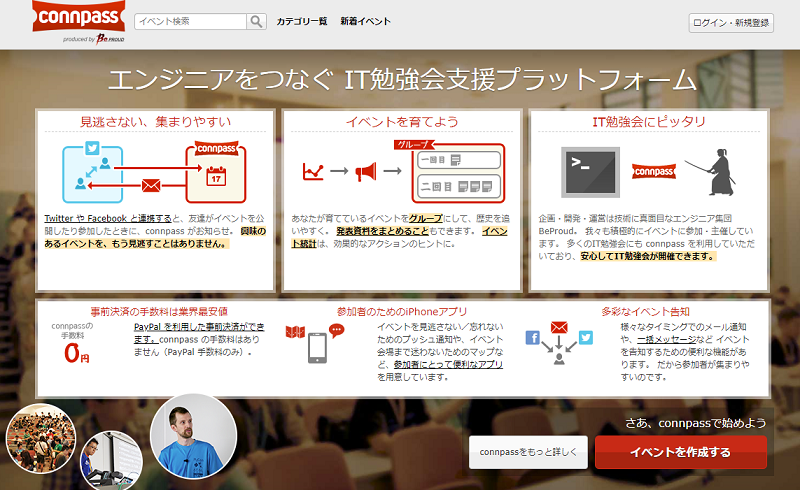
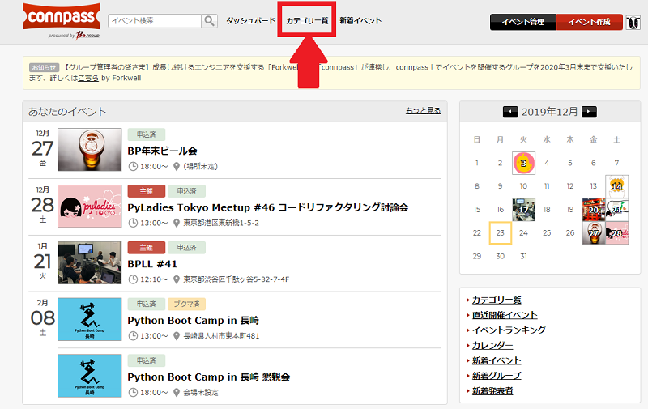
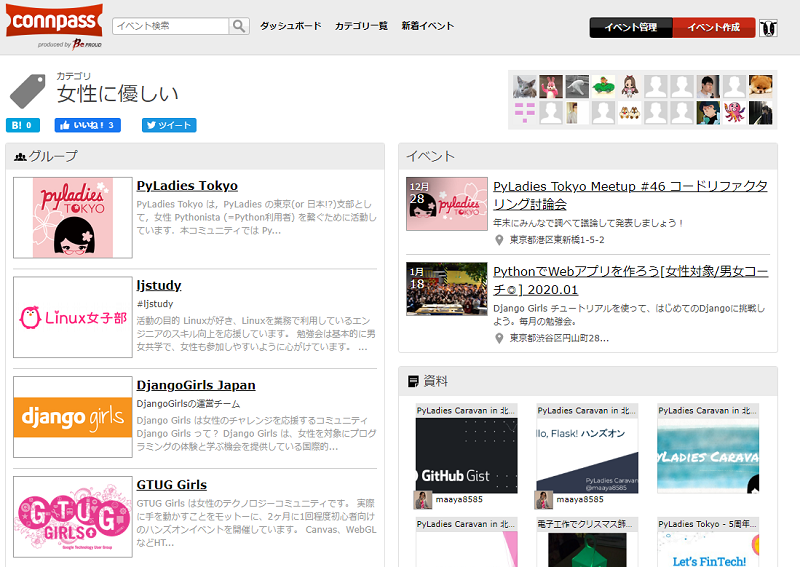
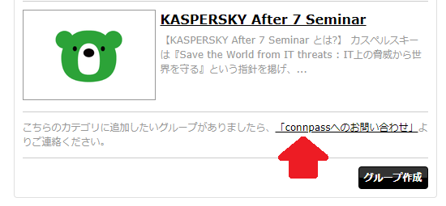
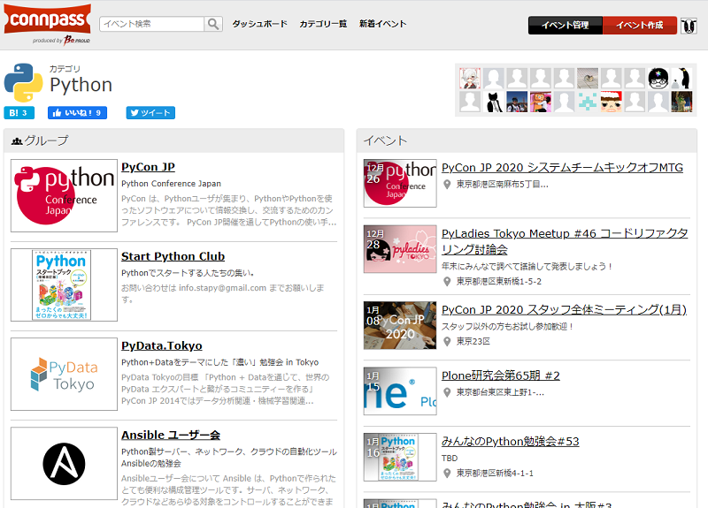
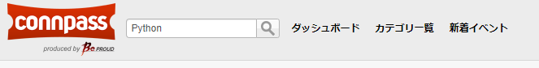

鉄は熱いうちに打て
=============================
自分に合ったイベントを探そう¶
2019-12-25
メリークリスマス！
この記事は PyLadies Japan Advent Calendar 2019 - Adventar の25日目です。
今回は、イベントや勉強会の探し方を紹介します。
先日、とある女性限定勉強会に参加したときに参加者の方から「いろいろあって、女性が多い、もしくは女性だけの勉強会に参加したいと思いここにただどりつきました。やっと見つけられました！」というお話をうかがいました。 その方は、インターネットなどで検索してもなかなか思った通りの勉強会に参加できなかったそうです。
結局、女性が多そうな男女混合のイベントに出て、そこで知り合った方から女性限定の勉強会を紹介されたそうです。
私もその話を聞いて「なかなか見つからなかった？？」と不思議に思ったのですが、検索エンジンで検索するだけではお金をかけて広告を売ったりSEO対策をしているページが上位に来るのでなかなか見つからないみたいです。
「IT系の勉強会を探すなら、 connpass を利用すると見つかりますよ！」と、アドバイスしました。
しかし、実は彼女は connpass を利用していたのです。でも、女性が多めな勉強会は見つけることができなかったそうです。
なんだってー！！！
ここからが本題ですが、connpassで女性が多めの勉強会を見つける方法を紹介します。
まず、ヘッダーの「カテゴリ一覧」をクリックします。
「女性に優しい」をクリックすると、女性の参加者が多めのコミュニティーの一覧が左側に表示され、右側に近々開催されるイベントが表示されます。
余談ですが、「あれ？うちのコミュニティーも女性に優しいのに一覧に出てこないよ？」と思った管理者の皆様に朗報です。 一覧の下のほうに「connpassへのお問い合わせ」に連絡してね。と書いてあります。この機会にご登録ください。
女性に優しい勉強会で慣れたので、Pythonの勉強会にも行ってみたくなったら、カテゴリ一覧から「Python」を選んでください。
カテゴリに登録されていない勉強会もヘッダーの検索窓からも検索できます。
いかがでしたでしょうか。来年も connpass を利用して自分に合った勉強会を見つけてください。
最後に宣伝です。
実は上記で検索したイベントには私も参加します。
女性に優しいコミュニティー PyLadies Tokyoの勉強会 PyLadies Tokyo Meetup #46 コードリファクタリング討論会 も12/28に開催されます！ ぜひ、参加を検討してみてください。待ってます！！
長崎県で開催の Python Boot Camp in 長崎 にも参加するので参加を検討してみてください。待ってます！！
それでは、良いお年を！！